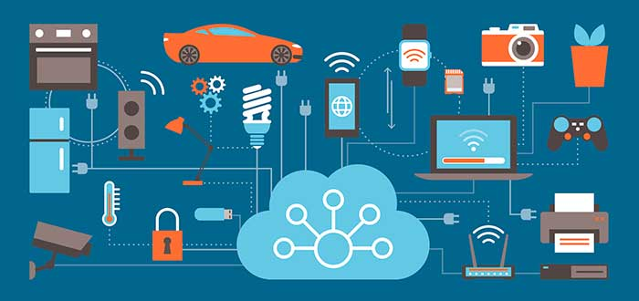

El Internet de las cosas no es sino una red de interconexión digital entre dispositivos, personas y la propia Internet que permite el intercambio de datos entre ellos, permitiendo que se pueda capturar información clave sobre el uso y el rendimiento de los dispositivos y los objetos para detectar patrones, hacer recomendaciones, mejorar la eficiencia y crear mejores experiencias para los usuarios.
Así, el Internet de las cosas es algo así como un concepto intangible, es la conexión por ejemplo entre tu smartphone y los dispositivos smart que tienes en casa para controlar la iluminación o el aire acondicionado, es una Raspberry Pi que controla la programación de tu televisor, o es un robot aspiradora que configuras desde tu teléfono móvil para que te limpie la casa automáticamente cuando no estás.
¿Cómo funciona el Internet de las cosas?
Los dispositivos IoT se conectan con un proceso llamado M2M (machine to machine, o máquina a máquina) en el que dos dispositivos o máquinas cualesquiera se comunican entre sí utilizando cualquier tipo de conectividad (que puede ser cable, WiFi, Bluetooth, etc.), haciendo su trabajo sin la necesidad de que un humano intervenga. Esto se realiza necesariamente con sensores y chips específicos que están implantados en los dispositivos (por ejemplo, un smartphone habitualmente tiene sensor de luz ambiental, giroscopio, etc.).
Estos dispositivos conectados generan una gran cantidad de datos que llegan a una plataforma IoT que recolecta, procesa y analiza dichos datos. Esta información se hace relevante al usuario porque gracias a ella se pueden sacar conclusiones de los hábitos y preferencias del mismo, así como para facilitarle la vida. Por ejemplo, y hay algún fallo en tu coche te puede llegar un aviso para que lo lleves al taller.

¿Cómo influye el IoT y por qué se llama así?
En nuestra vida cotidiana podemos ver una enorme cantidad de objetos conectados que forman parte del Internet de las cosas, y es que según el Worldwide Global DataSphere IoT Devices and Data Forecast para el año 2025 tendremos en torno a 41.600 millones de dispositivos conectados.
A continuación vamos a poner algunos ejemplos para que puedas entender la repercusión de esto:
| Vehículos autónomos: cada vez se habla más de los coches que conducen solos sin que el usuario tenga que hacer nada más allá que decirle dónde quiere ir. Lo que está claro es que los vehículos son cada vez más inteligentes, con pantalla táctil y una enorme cantidad de sensores que facilitan la vida al usuario. |
Robots aspiradora: cuentan con una gran cantidad de sensores que permiten limpiar el suelo de la casa sin chocarse con nada y esquivando obstáculos de manera independiente. |
Smart home: los dispositivos «smart» para los hogares incluyen desde sensores de presencia que encienden luces automáticamente hasta sensores de temperatura o humedad que activan otros aparatos. Incluso los asistentes como Alexa son dispositivos IoT. |
Son tantas las «cosas» y aplicaciones que tiene este término que por ese motivo se ha determinado «Internet de las cosas», pues como hemos dicho antes es una especie de ente abstracto complicado de definir con exactitud.
|